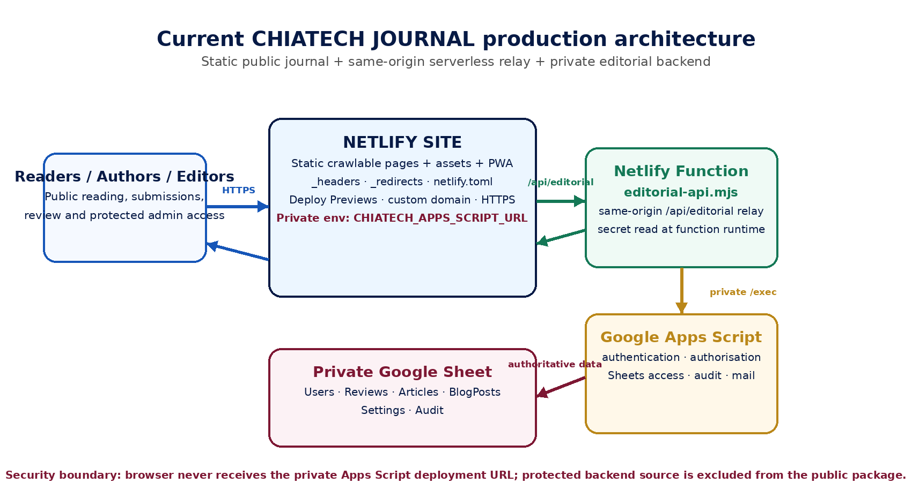
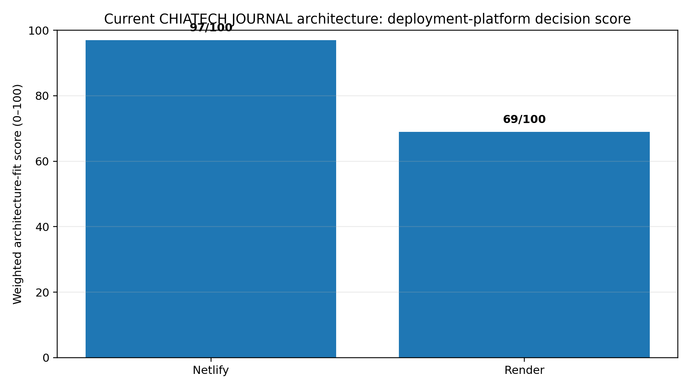
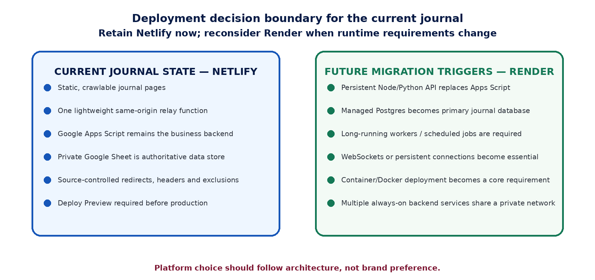

Production-approved public reading copy. DOI pending registration. This page is not a substitute for any later Crossref record.
Netlify or Render for an Open-Access Journal Portal? Evidence-Based Deployment Selection for the CHIATECH JOURNAL Architecture
Abstract
Background: CHIATECH JOURNAL is implemented as a crawlable static publication portal with a same-origin serverless editorial relay, a private Google Apps Script service and a private Google Sheet. The repository is already strongly coupled to Netlify through Functions, redirects, headers, deployment previews and release controls. Objective: This study compared Netlify and Render to determine the better production deployment platform for the journal's current architecture and to identify the conditions under which migration would become technically justified. Methods: A technical case-study and weighted multi-criteria decision analysis were conducted on 17 July 2026. Primary evidence comprised the journal production guide, repository map, launch checklist, Netlify configuration, redirect/header rules, ignore rules and service-worker controls. Current official Netlify and Render documentation and peer-reviewed serverless-computing literature were used for external validation. Eight criteria were weighted across architecture alignment, migration burden, secret-relay fit, preview/rollback workflow, static delivery, operational simplicity, persistent-runtime extensibility and plan sustainability. Results: The supplied release contains a Netlify Functions directory, a forced same-origin rewrite from /api/editorial to a Netlify Function, 17 redirect rules, six scoped header blocks, 15 public-package exclusion rules and nine Netlify-specific production-gate checks. The current-state decision score was 97/100 for Netlify and 69/100 for Render. Netlify preserves the existing serverless relay and source-controlled security/routing model with minimal change. Render can serve the static portal and provides strong persistent Web Services, previews and managed infrastructure, but reproducing the present architecture would require translating platform-specific routing/headers and replacing or re-hosting the Netlify relay. Conclusion: Netlify is the recommended production platform for the present journal. Render should be reconsidered only if the journal replaces Google Apps Script with a persistent Node/Python service, adopts managed Postgres as the primary data authority, requires long-running workers, WebSockets or a multi-service private-network architecture.
1. Introduction
Scholarly publishing platforms have two simultaneous responsibilities: they must present stable, crawlable and citable public records, and they must protect editorial workflows, unpublished manuscripts, authentication data and operational secrets. These requirements create an architectural selection problem that is different from choosing a hosting platform for a simple portfolio site. The hosting decision affects routing, deployment reproducibility, secret management, preview testing, rollback, metadata discoverability and the boundary between public and private editorial services.
The CHIATECH JOURNAL repository is not a generic dynamic web application. Its current production guide defines a deliberately split architecture in which Netlify serves the public journal pages, forms and assets; a Netlify Function provides the same-origin /api/editorial relay; Google Apps Script performs authentication, authorisation, Google Sheet access, audit logging and editorial mail; and a private Google Sheet remains authoritative for operational records. The public article registry exposes only records deliberately published by an authorised administrator. This separation reduces the amount of privileged logic executed in the browser and prevents the private Apps Script deployment URL from becoming part of the public application contract.
The practical question addressed in this paper is therefore not whether Render is a capable cloud platform. Render supports both static sites and persistent web services, while Netlify provides static delivery and serverless Functions. The relevant question is which platform best fits the architecture that actually exists, with the least security regression, migration risk and operational complexity. Platform selection by feature popularity alone would ignore the cost of translating routing rules, deployment gates, environment-variable handling, protected-path headers and the current same-origin relay.
1.1 Problem statement and contribution
A recommendation to migrate a live scholarly portal should be based on verifiable architectural evidence rather than a general comparison of vendor feature lists. The present journal has platform-specific configuration embedded in its production process, yet Render is attractive for startup developers because it can host long-running Node/Python services, Docker workloads, managed databases and other serverful components. Without a structured comparison, the journal could either remain on Netlify for the wrong reasons or migrate to Render before a persistent runtime is actually needed.
This study contributes a repository-grounded deployment assessment, a transparent weighted decision matrix and a future-state decision boundary. It distinguishes current-state architecture fit from future extensibility. The resulting recommendation is therefore conditional: Netlify is evaluated for the architecture presently implemented, while Render is evaluated both as a migration target now and as a future platform if the backend architecture materially changes.
1.2 Aim, questions and decision rule
The aim was to determine whether Netlify or Render is the better deployment platform for the current CHIATECH JOURNAL production architecture. Three questions guided the analysis: (1) Which platform most directly matches the repository's existing public/private service boundary? (2) Which platform requires the least translation of security, routing and release controls? (3) Which future requirements would justify moving from the present serverless relay to a persistent web-service architecture?
The decision rule was conservative: migration was recommended only if the alternative platform produced a materially better fit for current requirements or solved a present operational constraint that the existing platform could not reasonably satisfy. Future capabilities were considered, but they were deliberately given less weight than current production alignment because unused flexibility does not compensate for avoidable migration risk.
2. Literature and Technical Framework
2.1 Serverless and serverful deployment models
Serverless computing abstracts infrastructure management and executes application logic as event-driven functions rather than as continuously managed application servers. Toosi et al. (2025) describe serverless computing as a model that shifts server-management concerns away from the developer while preserving challenges around state, cold starts, debugging, security and compliance. Marin, Perino and Di Pietro (2022) likewise show that serverless architecture changes the security model rather than removing security responsibilities. Escaleira et al. (2025) further organize serverless security around runtime, network, function, orchestration and data concerns, reinforcing the need to evaluate the entire workflow rather than only the hosting endpoint.
Netlify Functions fit the Function-as-a-Service model: function source is version-controlled and deployed with the site, while runtime secrets can be provided through environment variables. This pattern is particularly suitable when a site needs a narrow privileged relay without requiring an always-on application process. Render's Web Service model is different: it is intended for applications that execute server-side code as a long-running process and listen for HTTP traffic on a port. Render also supports Static Sites for content that can be delivered without a runtime process.
2.2 Deployment reproducibility, previews and rollback
A journal release process benefits from immutable or independently testable deployment artifacts because editorial changes should be reviewed before they become public. Netlify Deploy Previews are generated for pull or merge requests in connected repositories and use distinct preview URLs, allowing a release to be tested before production. The journal's own launch checklist makes this preview gate explicit. Render also supports service previews for both static sites and web services, providing temporary instances with their own URLs. The comparison therefore does not treat preview capability as unique to Netlify; the distinction is that the current journal process is already written around Netlify's preview and deployment model.
2.3 Security and configuration as deployment evidence
In a production journal, routing and response headers are part of the security architecture. The current repository uses a default Content Security Policy, HSTS, frame controls, referrer and permissions policies, no-store controls for API and protected editor routes, and no-index headers for protected editorial surfaces. Netlify supports file-based or netlify.toml-based routing and header rules. Render static sites also support redirects, rewrites and response headers, but migration would require translating the existing rules into Render's configuration model and separately redesigning the same-origin relay if the Netlify Function were removed.
The repository also separates public code from protected operational source. The backend directory, tools, legacy article directories and internal documentation are excluded from the public Netlify package, while public crawler surfaces remain intentionally available. This is not simply a hosting preference: it is a documented production boundary that would need to be re-established and re-tested on any alternative platform.
3. Materials and Methods
3.1 Study design and evidence date
An applied technical case-study design with weighted multi-criteria decision analysis was used. The evaluation date was 27 August 2026. The unit of analysis was the deployment architecture represented by the supplied CHIATECH JOURNAL release artifacts, not a synthetic benchmark application. No claim is made that the resulting score measures universal platform quality; it measures fit to the current journal architecture.
3.2 Primary project evidence
Table 1. Primary technical evidence used in the deployment comparison. Counts were derived from the supplied release artifacts on 27 August 2026.
3.3 External validation sources
Platform capabilities were checked against current official Netlify and Render documentation. Netlify evidence covered Functions, function environment variables, custom headers, redirects and deploy previews. Render evidence covered the distinction between Static Sites and Web Services, static-site redirects/headers, service previews, free-instance limitations and persistent web-service behavior. Peer-reviewed serverless literature was used to frame the security and architecture implications rather than to substitute for vendor-specific configuration evidence.
3.4 Decision criteria, weights and scoring
Table 2. Weighted current-state architecture-fit criteria. Weights sum to 100%.
Architecture alignment and configuration reuse together received 45% of the weight because the journal is already implemented and has a documented production gate. Secret-relay fit received 15% because the repository deliberately hides the Apps Script deployment URL behind a same-origin function. Preview/rollback, static delivery and operational simplicity together received 30%. Persistent-runtime extensibility and plan sustainability received 10%, ensuring that future growth influenced—but did not dominate—the current-state decision.
Each platform was scored from 1 to 5 against the evidence. The weighted score was calculated as the sum of criterion weight multiplied by score divided by 5. A difference greater than 15 percentage points was treated as operationally material for this case study. The matrix was reviewed against the future-state triggers described in Section 4.5 to avoid presenting the current recommendation as permanent.
4. Results
4.1 Current journal architecture is Netlify-specific but backend-decoupled
The repository evidence shows a clear separation between public delivery, privileged relay and editorial data authority. The public journal is static and crawlable, but it is not purely static in an operational sense because protected editorial requests pass through a Netlify Function. That function does not replace the business backend; it protects and relays access to the Google Apps Script service, which in turn reads and writes the private Google Sheet. This distinction is important because it explains why the journal does not presently require a persistent Node or Python server.

Figure 1. Current CHIATECH JOURNAL production architecture. Source: Researcher's technical synthesis of the supplied repository map, production guide, netlify.toml and launch checklist.
The platform-specific configuration surface is substantial. The supplied _redirects file contains 17 active rules. The _headers file defines six path-scoped blocks, including site-wide security headers, long-lived asset caching and no-store/no-index controls for privileged routes. The .netlifyignore file contains 15 exclusions. The launch checklist contains 76 production checks, nine of which explicitly reference Netlify. These counts do not represent independent security controls—some rules overlap with netlify.toml—but they demonstrate that a migration would be a configuration translation exercise, not merely a DNS change.
4.2 Netlify fit to the current release
Netlify received maximum scores for architecture alignment, configuration reuse, secret-relay fit, preview workflow, static delivery and operational simplicity. The journal already declares netlify/functions as the Functions directory and rewrites /api/editorial to the function endpoint. The private CHIATECH_APPS_SCRIPT_URL is intended to exist only as a Netlify environment variable. Netlify documentation confirms that runtime environment variables can be used by serverless Functions to provide sensitive values without embedding them in public browser code.
The release process also depends on a Netlify Deploy Preview before production promotion. Current Netlify documentation describes Deploy Previews as isolated URLs for pull/merge-request changes and states that functions are versioned with site deploys. This matches the journal's need to verify content, security headers, protected routes and editorial controls before publishing. Netlify's file-based redirect and header support also corresponds directly to the repository's existing _redirects, _headers and netlify.toml artifacts.
Netlify did not receive the maximum score for persistent-runtime extensibility because its current strength in this project is precisely the absence of an always-on application server. If future journal requirements include long-running workers, WebSockets, a primary server-rendered application process or a managed relational database tightly coupled to backend compute, the architecture would need to change or use additional services.
4.3 Render fit and migration implications
Render is technically capable of hosting the journal's static public content. Its Static Site service is designed for HTML/CSS/JavaScript output served through a global CDN and supports redirects, rewrites, response headers and pull-request previews. This means the public-facing portion could be migrated without converting it into a persistent Web Service.
The difficulty arises at the privileged relay boundary. Render's Web Service model is designed for long-running server-side applications that bind to a network port. Replacing the existing Netlify Function with a Render Web Service would therefore add an always-on or instance-managed service to perform a job that is currently a small event-driven relay. Alternatively, the journal could keep Google Apps Script public-to-server integration by exposing its endpoint directly to the browser, but that would violate the current architecture's stated rule that the Apps Script deployment URL remain private. A Render migration that preserves this security boundary would therefore need a new relay service or an equivalent edge/serverless mechanism.
Render's static-site headers and redirects are viable, but the current repository artifacts are written for Netlify semantics. The 17 redirects, six header scopes, no-index/no-store protections and source-exclusion rules would have to be translated and regression-tested. Render's service previews are a strong capability, but they would replace an already institutionalized Netlify preview gate rather than solve a missing feature. For the current state, Render's strongest advantage—persistent application services—does not correspond to a present requirement.
4.4 Weighted decision matrix
Table 3. Weighted architecture-fit score for the current CHIATECH JOURNAL deployment. The score is a case-specific decision aid, not a general performance benchmark.

Figure 2. Weighted current-state architecture-fit scores. Netlify = 97/100; Render = 69/100.
The 28-point difference exceeds the pre-specified 15-point materiality threshold. The result is driven primarily by migration burden and direct fit to the existing same-origin serverless relay. Render remains competitive on static delivery and scores higher for persistent-runtime extensibility, but those capabilities do not offset the current cost of re-platforming a release process that is already built around Netlify Functions, redirects, headers and deploy previews.
4.5 Conditions under which Render becomes the better choice
The recommendation changes if the architecture changes. Render becomes materially more attractive when the journal needs a long-running server process or multiple coordinated services rather than a static frontend plus a narrow relay. Examples include replacement of Google Apps Script with a Node/Python API, adoption of managed Postgres as the primary editorial data authority, use of background workers or scheduled service jobs, WebSockets, server-side rendering that must execute on each request, or Docker-based deployment as a central requirement.

Figure 3. Architecture-based decision boundary for future re-evaluation of Render.
Table 4. Future-state triggers that would change the platform recommendation.
5. Discussion
5.1 Why Netlify is the better production option now
The central finding is architectural, not promotional: Netlify is the better current platform because the journal is already designed as a Netlify-native static/serverless system. The same-origin function relay, protected runtime secret, deploy-preview gate, redirect model, source-controlled header rules, public-package exclusions and operational checklist all align with the chosen platform. Preserving those tested controls produces less change at the exact point where the journal is trying to move from pre-publication readiness to a trustworthy production record.
A migration to Render would not automatically improve journal discoverability. Both platforms can serve static content through global delivery networks, and the current journal already includes robots.txt, sitemap.xml, feed.xml, canonical metadata and a plan for stable crawlable article landing pages. The more important discovery task is to produce stable article URLs with complete bibliographic metadata and approved HTML/PDF versions of record. That task is independent of whether the CDN is Netlify or Render.
5.2 Security interpretation
The recommendation should not be read as evidence that serverless is inherently secure. Marin et al. (2022) and Escaleira et al. (2025) show that serverless systems introduce their own access-control, observability, function and data-security concerns. The journal's benefit comes from a narrow privilege boundary: public browser code does not need the private Apps Script deployment URL, API routes are marked no-store, protected portal routes are no-indexed, and backend source is excluded from the public package. These controls remain effective only if environment variables, function logs, deployment history and Google-side permissions are managed correctly.
The current Netlify Free plan can support functions, deploy previews, custom domains and SSL, but production platform choice should not be based solely on free-tier availability. Netlify's current credit-based Free plan has hard usage limits and can pause projects when the limit is reached. Render likewise states that its Free web services are for testing rather than production and may spin down after inactivity. For a scholarly publication portal, traffic and function usage should be monitored and the hosting plan upgraded before resource limits become a publication-availability risk.
5.3 Operational and editorial implications
The repository already treats deployment as an editorial quality gate. The launch checklist requires DNS, HTTPS, security headers, rollback evidence, secret isolation, health checks and preview approval before papers are made public. Keeping Netlify allows these controls to remain actionable without rewriting the release manual. This is particularly important because the journal's production guide also requires publication records to remain in draft until acceptance, metadata, DOI, licence, HTML/PDF and author-proof conditions have been satisfied.
A platform migration immediately before or during pioneer publication would create two simultaneous variables: editorial-production change and infrastructure change. From a change-control perspective, separating those risks is preferable. The journal should first stabilize publication workflow on the architecture for which the production checklist was written. Any later migration can then be conducted as a controlled technical project with equivalent security and publishing acceptance tests.
5.4 Limitations
This study is a configuration and architecture-fit assessment rather than a live performance benchmark. It did not measure time-to-first-byte, global latency, function cold starts, availability, cost under real journal traffic or incident-recovery time on either platform. Vendor plans and product features can change. The scoring weights are explicit but necessarily judgement-based; another organization with a persistent backend or different operational priorities could assign different weights and obtain a different result.
The analysis is also based on the supplied release artifacts. It assumes that the documented Netlify Function and backend files exist in the intended repository and that live deployment validation will be completed. The production guide itself correctly distinguishes local readiness from proof of a live deployment. Accordingly, this paper recommends the deployment architecture but does not certify that the current live site has passed every production check.
6. Conclusion and Recommendation
For the CHIATECH JOURNAL architecture evaluated on 27 August 2026, Netlify is the recommended production deployment platform. The decision is supported by direct repository evidence: the site already uses Netlify Functions, a private function environment variable, forced same-origin API rewriting, source-controlled routing and security-header rules, public-package exclusions, deploy previews and Netlify-specific release checks. The weighted current-state architecture-fit score was 97/100 for Netlify versus 69/100 for Render.
The recommended action is therefore to retain Netlify for the present pioneer publication cycle, complete the existing launch checklist, validate the /api/editorial health path, verify protected admin/editor behavior, confirm DNS/HTTPS/security headers, and publish real paper records only after the journal's documented production gate is satisfied. Hosting-plan usage should be monitored and upgraded when sustained production traffic makes Free-tier limits inappropriate.
Render should remain on the journal's architecture roadmap rather than be treated as the immediate replacement. Re-evaluation is justified when the editorial backend becomes a persistent Node/Python service, when Postgres replaces Google Sheets as the primary data authority, or when long-running workers, WebSockets, Docker-first operations or a multi-service private network become actual requirements. At that point, the same decision matrix should be rerun against the migrated architecture rather than assuming that today's recommendation remains optimal.
7. Implementation Priorities
Table 5. Recommended implementation priorities following the platform comparison.
Declarations
Conflict of interest
The author is the Founding Publisher and Managing Editor of CHIATECH JOURNAL and is affiliated with the publisher that operates the evaluated portal. This creates an institutional interest in the deployment decision. To reduce interpretive bias, the paper uses explicit repository artifacts, first-party platform documentation, transparent criteria and a reproducible scoring matrix. Independent technical and editorial review is recommended before publication.
Ethics and privacy
The study did not involve human participants, private user records or confidential manuscript content. The analysis was limited to supplied release artifacts, public platform documentation and published literature. No private Apps Script URL, password, token, Sheet ID or administrator credential is reproduced.
Data and materials availability
The primary evidence consists of the CHIATECH JOURNAL release configuration and operations artifacts supplied to the author/editorial team, including the production guide, repository map, launch checklist, netlify.toml, _redirects, _headers, .netlifyignore, robots.txt, sitemap.xml and service-worker configuration. Public platform documentation is available from the cited Netlify and Render documentation pages.
AI-assisted work disclosure
Generative AI and code-assisted tools were used to support comparative synthesis, document production and formatting. Platform facts, repository counts, citations, calculations and the final recommendation are presented for human verification and editorial responsibility. AI output is not treated as independent empirical evidence.
References
CHIA TECH SOLUTIONS AND RESOURCES LIMITED. (2026a). CHIATECH JOURNAL production and operations guide [Software documentation].
CHIA TECH SOLUTIONS AND RESOURCES LIMITED. (2026b). CHIATECH JOURNAL repository map [Software documentation].
CHIA TECH SOLUTIONS AND RESOURCES LIMITED. (2026c). CHIATECH JOURNAL production launch checklist [Technical checklist].
CHIA TECH SOLUTIONS AND RESOURCES LIMITED. (2026d). netlify.toml [Deployment configuration file].
CHIA TECH SOLUTIONS AND RESOURCES LIMITED. (2026e). _redirects and _headers [Routing and HTTP security configuration files].
Escaleira, P., Cunha, V. A., Barraca, J. P., Gomes, D., & Aguiar, R. L. (2025). A systematic review on security mechanisms for serverless computing. Cluster Computing, 28, Article 465. https://doi.org/10.1007/s10586-025-05371-4
Marin, E., Perino, D., & Di Pietro, R. (2022). Serverless computing: A security perspective. Journal of Cloud Computing, 11, Article 69. https://doi.org/10.1186/s13677-022-00347-w
Netlify. (2026, June 3). Functions overview. Netlify Docs. https://docs.netlify.com/build/functions/overview/
Netlify. (2026, June 16). Environment variables and serverless functions. Netlify Docs. https://docs.netlify.com/build/functions/environment-variables/
Netlify. (2026, June 30). Compare preview options. Netlify Docs. https://docs.netlify.com/deploy/compare-preview-options/
Netlify. (2025). Custom headers. Netlify Docs. https://docs.netlify.com/manage/routing/headers/
Netlify. (2025). Redirects and rewrites. Netlify Docs. https://docs.netlify.com/manage/routing/redirects/overview/
Netlify. (2026). Pricing and plans. Retrieved August 27, 2026, from https://www.netlify.com/pricing/
Render. (n.d.-a). Your first Render deploy. Render Docs. Retrieved August 27, 2026, from https://render.com/docs/your-first-deploy
Render. (n.d.-b). Web services. Render Docs. Retrieved August 27, 2026, from https://render.com/docs/web-services
Render. (n.d.-c). Static sites. Render Docs. Retrieved August 27, 2026, from https://render.com/docs/static-sites
Render. (n.d.-d). Service previews. Render Docs. Retrieved August 27, 2026, from https://render.com/docs/service-previews
Render. (n.d.-e). Deploy for free. Render Docs. Retrieved August 27, 2026, from https://render.com/docs/free
Toosi, A. N., Javadi, B., Iosup, A., Smirni, E., & Dustdar, S. (2025). Serverless computing for next-generation application development. Future Generation Computer Systems, 164, Article 107573. https://doi.org/10.1016/j.future.2024.107573
Publication Record
How to cite: Chia, S. K. (2026). Netlify or Render for an open-access journal portal? Evidence-based deployment selection for the CHIATECH JOURNAL architecture. CHIATECH JOURNAL, 1(1), e004. DOI pending registration.
Article: e004 · Publication: August 2026 · ISSN: Pending assignment · DOI: Pending registration
Publisher: CHIA TECH SOLUTIONS AND RESOURCES LIMITED · RC 1839865 · Nigeria
Journal contact: chiatechlibrary@gmail.com
Table 1
| Article | Volume/Issue | Published | ISSN | DOI |
|---|---|---|---|---|
| e004 | 1(1) | August 2026 | Pending assignment | Pending registration |
Table 2
| Evidence artifact | Observed deployment evidence | Use in comparison |
|---|---|---|
| Production/operations guide | Static public site + Netlify relay + Apps Script + private Sheet; Netlify production acceptance steps | Defines intended production architecture |
| Repository map | netlify/functions/editorial-api.mjs is the same-origin relay; backend source is private | Establishes current service boundary |
| netlify.toml | Publish root; Functions directory; /api/editorial rewrite; protected headers; Node 22 | Shows direct platform integration |
| _redirects | 17 active rules covering API relay, admin routing, legacy protection and internal-source blocking | Measures routing migration surface |
| _headers | Six path scopes including CSP/HSTS/global controls, no-store API/admin and immutable assets | Measures security-header migration surface |
| .netlifyignore | 15 exclusion entries for backend, tools, legacy papers and operator documents | Measures public-package boundary |
| Launch checklist | 76 release checks, including nine Netlify-specific production controls | Shows operational dependence |
| Service worker / robots / sitemap | API/portal/submission excluded from cache; crawler rules; 33 sitemap URLs | Shows public/private and discovery behavior |
Table 3
| Criterion | Weight | Scoring interpretation |
|---|---|---|
| Architecture alignment | 25% | 1 = poor fit; 3 = workable with notable change; 5 = direct fit / minimal change |
| Configuration reuse / migration burden | 20% | 1 = poor fit; 3 = workable with notable change; 5 = direct fit / minimal change |
| Secret relay & serverless fit | 15% | 1 = poor fit; 3 = workable with notable change; 5 = direct fit / minimal change |
| Preview / rollback workflow | 10% | 1 = poor fit; 3 = workable with notable change; 5 = direct fit / minimal change |
| Static delivery / discoverability | 10% | 1 = poor fit; 3 = workable with notable change; 5 = direct fit / minimal change |
| Operational simplicity | 10% | 1 = poor fit; 3 = workable with notable change; 5 = direct fit / minimal change |
| Persistent-runtime extensibility | 5% | 1 = poor fit; 3 = workable with notable change; 5 = direct fit / minimal change |
| Plan / cost sustainability | 5% | 1 = poor fit; 3 = workable with notable change; 5 = direct fit / minimal change |
Table 4
| Criterion | Weight | Netlify score | Weighted | Render score | Weighted |
|---|---|---|---|---|---|
| Architecture alignment | 25% | 5.0/5 | 25.0 | 3.0/5 | 15.0 |
| Configuration reuse / migration burden | 20% | 5.0/5 | 20.0 | 2.0/5 | 8.0 |
| Secret relay & serverless fit | 15% | 5.0/5 | 15.0 | 4.0/5 | 12.0 |
| Preview / rollback workflow | 10% | 5.0/5 | 10.0 | 4.5/5 | 9.0 |
| Static delivery / discoverability | 10% | 5.0/5 | 10.0 | 5.0/5 | 10.0 |
| Operational simplicity | 10% | 5.0/5 | 10.0 | 3.0/5 | 6.0 |
| Persistent-runtime extensibility | 5% | 3.0/5 | 3.0 | 5.0/5 | 5.0 |
| Plan / cost sustainability | 5% | 4.0/5 | 4.0 | 4.0/5 | 4.0 |
| TOTAL | 100% | 97.0/100 | 69.0/100 |
Table 5
| Future requirement | Current Netlify architecture | Render implication |
|---|---|---|
| Persistent Flask/FastAPI/Django/Express backend | Would require new serverful component or external service | Direct Web Service fit |
| Managed Postgres as primary editorial database | Current authoritative store is private Google Sheet | Native managed Postgres becomes attractive |
| Long-running/background workers | Not part of current journal release | Render worker/service model adds value |
| WebSockets / persistent connections | Not required | Web Service model is better aligned |
| Static journal + small relay only | Direct current fit | Migration adds unnecessary component/config translation |
| Crawlable article snapshots generated at build time | Can remain static/serverless | Does not by itself justify migration |
Table 6
| Priority | Action | Evidence / acceptance condition |
|---|---|---|
| Immediate | Retain Netlify as production host | No unnecessary migration before pioneer publication |
| Immediate | Restore/verify intended Git remote and inspect staged diff | No secrets, legacy papers, operator manuals or temporary files staged |
| Immediate | Set CHIATECH_APPS_SCRIPT_URL privately in Netlify | Private value available to Functions only as required |
| Immediate | Run Deploy Preview and full launch checklist | Preview passes before production promotion |
| Immediate | Verify /api/editorial?action=health | Returns ok: true through the production domain |
| Immediate | Verify DNS, HTTPS, CSP/HSTS and protected-route headers | Observed headers and valid TLS on journal.chiatechsolutions.com |
| Near term | Generate stable published article landing pages/snapshots | Each accepted paper has a crawlable URL, abstract and bibliographic metadata |
| Near term | Monitor Netlify credits, function use and bandwidth | Upgrade plan before limits threaten availability |
| Future trigger | Reassess Render when persistent backend/database requirements appear | New architecture demonstrates need for Web Service/Postgres/workers |